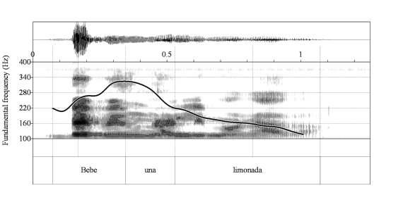
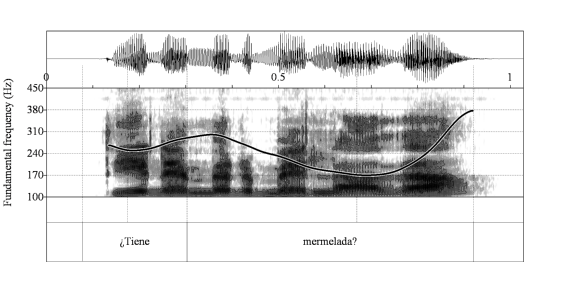
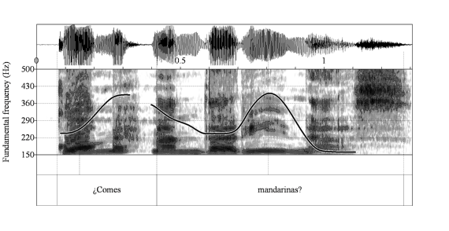
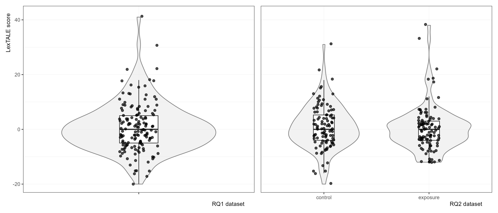
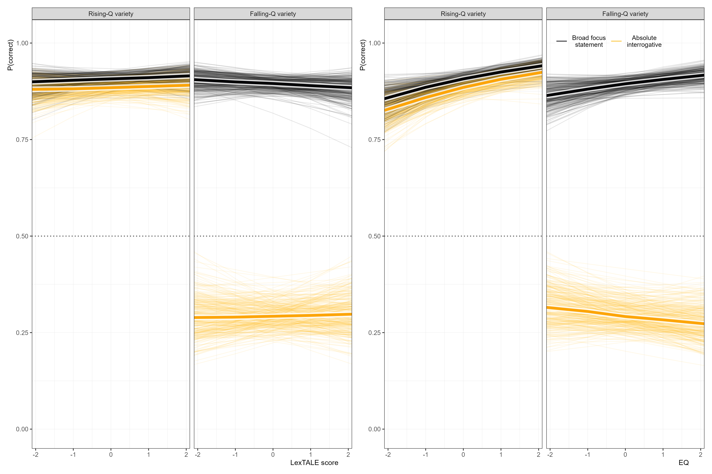
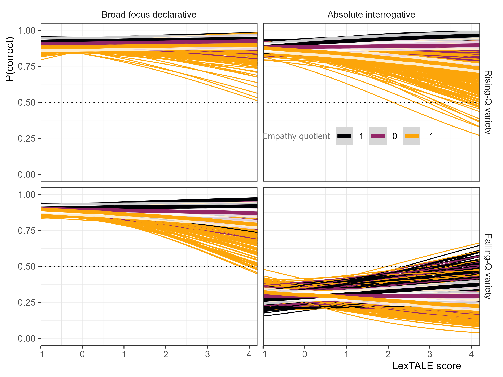
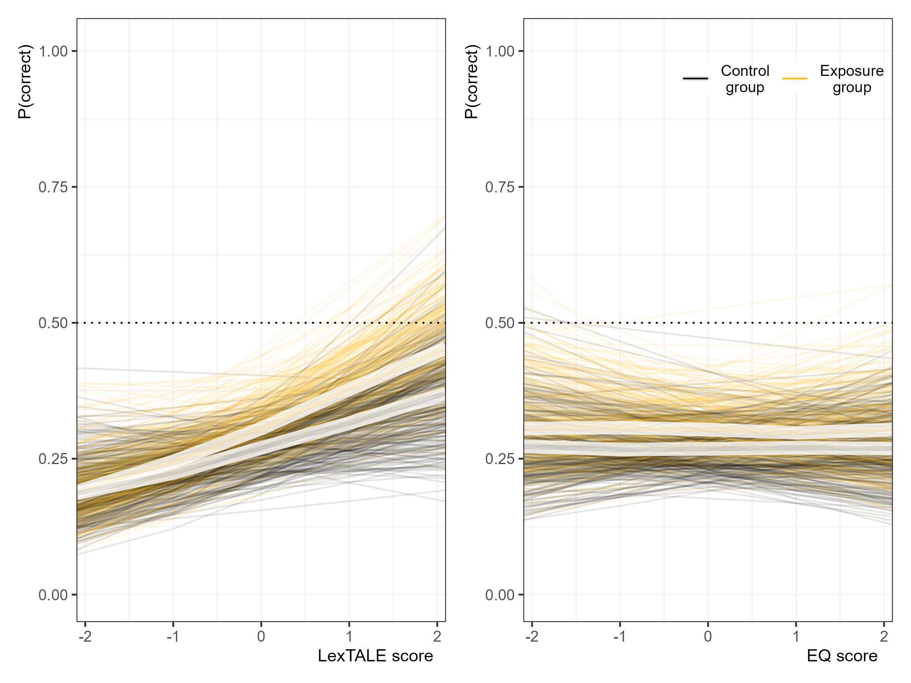
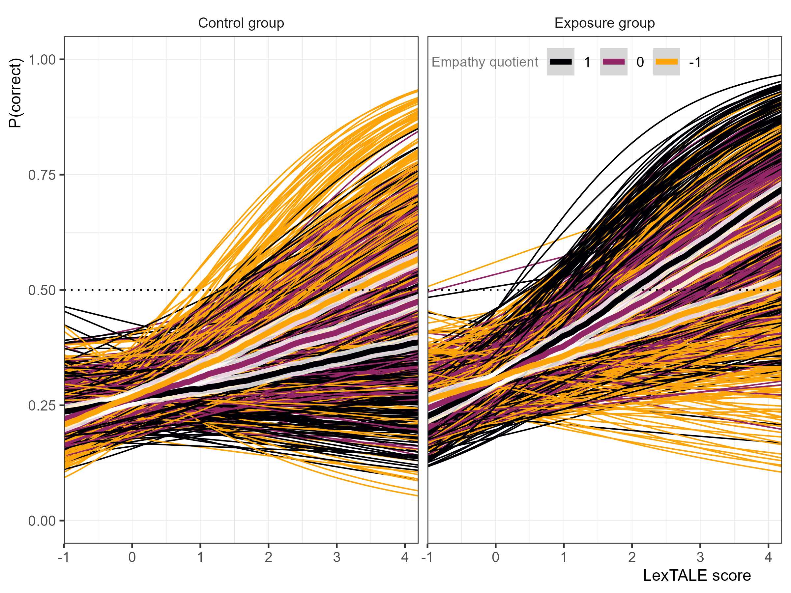

Age (years) | Reported gender | # of languages reported | ||||
|---|---|---|---|---|---|---|
Mean | SD | Female | Male | 2 | >2 | Not reported |
38.1 | 12.8 | 80 | 65 | 128 | 8 | 9 |
Rapid Acquisition of a Novel Intonation Contour by High-Empathy Individuals
Robert Esposito
Rutgers University
2026-04-28
Open Sciences
Pre-registered on OSF

https://osf.io/vpseq/


Roadmap
intonation
empathy
L2 intonation & incidental learning
modeling of L2 intonation
present study
Intonation
- Modulation of fundamental frequency (F0) across an utterance
- F0 generated by vibrating vocal folds
- We interpret the frequency as pitch

Intonation
Intonation (Ladd, 2008; Pierrehumbert, 1980) has a many-to-many mapping that variably signals…
- syntactic structure (Rao, 2006)
- constituent focusing (Büring, 2016)
- affective meaning (Rodero, 2011)
- politeness (Herrero et al., 2020)
- …
- sentence modality (Navarro Tomás, 1974)
Individual Differences in Empathy
In L1 speakers, empathy predicts…
- greater sensitivity to intonation cues when disambiguating ambiguous referent (Esteve-Gibert et al., 2020)
- more nuanced mapping of pitch span to epistemic bias (Orrico & D’imperio, 2020)
- greater accuracy of content-based questions regarding brief videos (Melchers et al., 2017)
Individual Differences in Empathy
In L1 EN L2 ES learners, empathy predicts more accurate perception of sentence modality in low-proficiency learners (Casillas et al., 2023)
Sentence Modality


Statement or Question?
Aguilar et al. (2024)
Statement or Question?

Aguilar et al. (2024)
¿Es una pregunta?
- neutral yes-no questions with low boundary tones documented in…
- Puerto Rican (Armstrong, 2010)
- Dominican (Willis, 2010)
- Venezuelan (Astruc et al., 2010)
- Argentinian (Gabriel et al., 2010)
- Galician (Pérez Castillejo & Fuente Iglesias, 2024)
L2 Intonation
- L1 Mandarin L2 Spanish requests are judged as impolite, even with lexical-grammatical aggression mitigators, due to non-target-like intonation (Herrero & Devı́s, 2020)
- “Polite” responses to wh- questions differ in English & Spanish (Estebas-Vilaplana, 2014)
- L1 EN L2 ES perceived as over-excited
- L1 ES L2 EN perceived as rude
- Accurate production/perception of sentence modality in Spanish almost entirely depends on intonation (Brandl et al., 2020)
Intonation in the L2 Classroom
Intonation remains sidelined in the L2 classroom (Jenkins, 2004; Lord & Fionda, 2013; Rao, 2019)
Explicit instruction leads to meaningful improvements (Olea, 2019; Sonsaat-Hegelheimer & Levis, 2025)…
but most learners seem to be acquiring intonation via incidental learning (Hulstijn, 2003), so we should learn more about that process
Development of L2 Intonation
- L1 EN L2 ES perception of intonation becomes more accurate with increasing proficiency as measured by…
- course level in university (Brandl et al., 2020; Nibert, 2006)
- Elicited Imitation Task test (Zárate-Sández, 2015)
- LexTALE (Casillas et al., 2023)
- L1 EN L2 ES perception and production becomes more accurate with study abroad experience (Craft, 2015; Henriksen et al., 2010; J. Trimble, 2023)
Development of L2 Intonation
Most L2 models omit suprasegmental features (Best et al., 2007; Flege & Bohn, 2021; Van Leussen & Escudero, 2015)
L2 Intonation Learning theory (LILt) predicts L2 difficulty based on…
- the inventory and distribution of categorical phonological elements
- the phonetic implementation of those elements
- the functionality of the elements
- the frequency of use of each element
But so far, ignores proficiency, experience, and individual differences
Mennen (2015)
LILt Predictions
- Inventory & distribution
- (Caribbean) Spanish & American English both have L%
- Phonetic implementation
- Phonetically similar across languages
- Function
- (Caribbean) Spanish: neutral yes-no questions , broad /narrow focus statement, wh- questions, imperatives… (Armstrong, 2010)
- American English: disingenuous yes-no question (Hedberg et al., 2017), contrasts with H% in not being directional (Pierrehumbert & Hirschberg, 1990)
- Frequency
- How often and by whom are these forms encountered?
LILt Predictions & Beyond
L1 EN–L2 ES learners struggle to perceive yes-no questions with L% (Brandl et al., 2020; George, 2024; J. C. Trimble, 2013)
Proficiency, experience (e.g., study abroad), L1-L2 transfer seem strong predictors…
but no evidence that empathy helps…
Present Study
- L1 EN L2 ES learners struggle with accurate identification of sentence type for Spanish yes-no questions with low boundary tones
- Understanding dialectal variation is part of communicative competence (Canale, 1987)
- The majority of research on intentional and incidental learning has focused primarily on vocabulary, spelling, morphology, and syntax
- phonetics and phonology have received little attention (Hulstijn, 2003)
- What internal/external factors contribute to the efficacy of incidental learning?
- Empathy impacts L1 and L2 processing of intonation
- What does early exposure to a new form look like for high-empathy individuals?
Research Questions
- Do higher-empathy, compared to lower-empathy, L1 English L2 Spanish learners display higher accuracy when identifying a Spanish utterance as a declarative versus interrogative?
- Partial replication of Casillas et al. (2023)
- Predicting similar results:
- Higher accuracy with increasing proficiency
- Low-proficiency high-empathy learners more accurate than proficiency-matched peers
Research Questions
- Do higher-empathy, compared to lower-empathy, L1 English L2 Spanish learners display higher accuracy when identifying a Spanish utterance, from a variety to which they have little or no previous exposure, as an interrogative if they are briefly exposed to conversations from that variety?
- Higher-empathy individuals more accurate than proficiency-matched peers after brief incidental-learning training session at all proficiency levels
Methodology
Participants
- Two experiments launched on Prolific.ac to collect data
- Differed only in exposure task
- All participants asked, “Are you familiar with Caribbean (e.g., Puerto Rican) or Galician Spanish?”
- Served as proxy for familiarity with yes-no questions with final fall
- Participants recruited until 100 responded “no” for each experiment
Participants
- L1 English born, raised, and currently living in Northeastern US
- Grew up monolingual English
- No hearing difficulties
- Required to use headphones on personal computer
RQ1 Participants
RQ2 Participants
Age (years) | Reported gender | Number of languages reported | ||||||
|---|---|---|---|---|---|---|---|---|
Mean | SD | Female | Male | Not reported | 2 | >2 | Not reported | |
control | 37.2 | 12.0 | 53 | 47 | 0 | 90 | 6 | 4 |
exposure | 38.2 | 12.5 | 57 | 42 | 1 | 92 | 5 | 3 |
Procedure
- Exposure task (only for Exposure group)
- 2AFC practice
- 2AFC
- LexTALE practice
- LexTALE
- Empathy Quotient
Exposure Task
- Exposed to three naturalistic phone conversations between two speakers of each variety:
- Dominican
- Puerto Rican
- Galician
dialect | time (seconds) | # of absolute interrogatives | # of final fall absolute interrogatives |
|---|---|---|---|
Dominican | 60 | 10 | 7 |
Galician | 47 | 5 | 3 |
Puerto Rican | 36 | 6 | 6 |
TOTAL | 143 | 21 | 16 |
Two-Alternative Forced Choice Task
- 88 items
- Cuban (falling yes-no)
- Puerto Rican (falling yes-no)
- Mexican (rising yes-no)
- Castillian (rising yes-no)
- Evenly split between broad focus declaratives and yes-no questions
- Three function words in subject-verb-object word order
- Object was always a noun with penultimate stress
LexTALE
Dataset | Mean | SD | Min | Max |
|---|---|---|---|---|
RQ1 | 0.62 | 9.09 | -20.00 | 41.00 |
RQ2 (control) | 0.98 | 8.10 | -20.00 | 31.00 |
RQ2 (exposure) | 0.35 | 8.34 | -12.00 | 38.00 |
LexTALE

Figure 1
Empathy Quotient
- 60 items: 40 critical items and 20 distractors
- four-point Likert scale ranging from “strongly agree” to “strongly disagree”
- half of the target items are coded to elicit “agree” and the other half “disagree”
- target items are scored with 2 or 1 points based on if the participant responds “strongly” or “slightly” to the “empathic” response, and 0 otherwise
- summed to a single-point value
- Scores range from 0 (low empathy) to 80 (high empathy)
Dataset | Mean | SD | Min | Max |
|---|---|---|---|---|
RQ1 | 42.61 | 11.71 | 15.00 | 74.00 |
RQ2 (control) | 42.57 | 12.12 | 15.00 | 74.00 |
RQ2 (exposure) | 41.47 | 12.52 | 12.00 | 67.00 |
Sample Trial of 2AFC
Is this a question?
No
Yes
Statistical Analysis
Bayesian multilevel logistic regression
Accuracy as a function of…
- RQ1
- variety (rising Q or falling Q)
- utterance type (broad focus declarative or yes-no question)
- LexTALE score
- EQ
- RQ2
- Group (exposure or control)
- LexTALE score
- EQ
- RQ1
Results
RQ1: Does accuracy change with proficiency &/or empathy?

Figure 2
RQ1: Empathy
Variety | Sentence_Type | Estimate | Lower_HPD | Upper_HPD | OR | OR_low | OR_high |
|---|---|---|---|---|---|---|---|
Caribbean | AbsInt | -0.04 | -0.19 | 0.11 | 0.96 | 0.82 | 1.12 |
Caribbean | Declarative | 0.14 | -0.04 | 0.31 | 1.14 | 0.96 | 1.36 |
Non-Caribbean | AbsInt | 0.24 | 0.06 | 0.41 | 1.27 | 1.06 | 1.51 |
Non-Caribbean | Declarative | 0.25 | 0.08 | 0.41 | 1.28 | 1.08 | 1.51 |
RQ1: Is there a proficiency x empathy interaction?

Figure 3
RQ1: Proficiency x Empathy
Variety | Sentence_Type | Estimate | Lower_HPD | Upper_HPD | OR | OR_low | OR_high |
|---|---|---|---|---|---|---|---|
Caribbean | AbsInt | 0.08 | -0.07 | 0.24 | 1.09 | 0.93 | 1.27 |
Caribbean | Declarative | 0.09 | -0.09 | 0.28 | 1.09 | 0.91 | 1.32 |
Non-Caribbean | AbsInt | 0.21 | 0.02 | 0.40 | 1.23 | 1.02 | 1.50 |
Non-Caribbean | Declarative | 0.01 | -0.16 | 0.19 | 1.01 | 0.85 | 1.21 |
RQ2: Does accuracy change with proficiency &/or empathy?

Figure 4
RQ2: Empathy and Proficiency
Effect | Estimate_logit | Lower_HPD_logit | Upper_HPD_logit | Estimate_OR | Lower_HPD_OR | Upper_HPD_OR |
|---|---|---|---|---|---|---|
ctrl_eq | -0.01 | -0.27 | 0.24 | 0.99 | 0.77 | 1.28 |
ctrl_lex | 0.23 | -0.04 | 0.49 | 1.26 | 0.96 | 1.63 |
exp_eq | -0.02 | -0.29 | 0.25 | 0.98 | 0.75 | 1.29 |
exp_lex | 0.31 | 0.05 | 0.57 | 1.37 | 1.06 | 1.77 |
RQ2: Is there a proficiency x empathy interaction?

Figure 5
RQ2 Interaction: Proficiency × Empathy
Group | Estimate | Lower_HPD | Upper_HPD | OR | OR_low | OR_high |
|---|---|---|---|---|---|---|
Control | -0.07 | -0.38 | 0.23 | 0.93 | 0.68 | 1.26 |
Experimental | 0.10 | -0.20 | 0.40 | 1.11 | 0.82 | 1.49 |
RQ2 Interaction: Proficiency × Empathy
- Proficiency held high: +4 SD (33.42; intermediate to advanced learners)
- Empathy varied
Low Empathy (−2 SD = 18.68)
43.87% [4.04%, 92.64%]
High Empathy (+2 SD = 65.36)
70.95% [17.42%, 98.24%]
Discussion
L2 Spanish Perception of Questions
- L1 English L2 Spanish struggle with Spanish yes-no questions with L%
- Predicted by LILt & aligns with majority of research…
- but not (Bedialauneta Txurruka, 2023)
- Bedialauneta Txurruka (2023) used Argentinian stimuli
- Might have differences from Puerto Rican & Cuban stimuli earlier than boundary tone (Face, 2007)
Proficiency
- Proficiency alone, as measured by the LexTALE, was not a strong predictor
- Contradicts a lot of previous research about acquisition of intonation (Brandl et al., 2020; Casillas et al., 2023; Nibert, 2006; Zárate-Sández, 2015), but only Casillas et al. (2023) used LexTALE
- Maybe vocab size isn’t good proxy of acquisition of intonation?
- Maybe my sample included too many low-proficiency participants?
Empathy
- Empathy alone predicts higher accuracy for falling-Q variety declaratives & rising-Q varieties
- Empathy by proficiency interaction:
- As learner’s proficiency increases, EQ becomes more influential
- Casillas et al. (2023) reports an empathy by proficiency effect, but it was different
- Empathy had more impact at lower proficiency levels, not higher
- The effect did not exist for yes-no questions
- There was no main effect of empathy
Empathy and Exposure
- Empathy by proficiency effect suggests that higher-proficiency higher-empathy learners outperform proficiency-matched peers
- The effect is pretty weak and unstable
- Suggests that rapid exposure, typical of the attention that minority varieties receive in the L2 classroom, is not enough
Future Direction
L2 learning
- What are L1 En L2 Sp paying attention to when determining if utterance is yes-no question?
- Depends on dialect they are learning/exposed to?
- What effect does exposure to multiple dialects have on acquisition of sentence modality?
- Does incorporation of explicit learning methods speed up acquisition of sentence modality?
- How do we incorporate dialectal variation?
Empathy
- Investigate other many-to-many mappings in linguistics in relation to empathy
- dialectal contact phenomena
- study abroad vs domestic learning
- segmental variation: e.g., perception of /s/ aspiration/deletion
Thank yous
- My parents
- Joseph
- My committee
- Kendra
- Jen
- Timo
- Nuria
- My cohort
Thanks!
slides
OSF repo

| rme70@scarletmail.rutgers.edu | |
| robertespo.github.io | |
| @RobertEspo | |
| jvcasillas.com/quarto-rutgers-theme |
References
Aguilar, L., Roseano, P., Vanrell, M. del M., & Prieto, P. (2024). Sp_ToBI training materials. https://sp-tobi.upf.edu
Armstrong, M. E. (2010). Puerto rican spanish intonation. Transcription of Intonation of the Spanish Language, 155–189. https://doi.org/10.21437/speechprosody.2010-145
Astruc, L., Mora, E., & Rew, S. (2010). Venezuelan andean spanish intonation. Transcription of Intonation of the Spanish Language, 191–226. https://doi.org/10.3765/exabs.v0i0.582
Bedialauneta Txurruka, I. (2023). Perception of spanish declarative questions and statements by L2 spanish speakers. In R. Skarnitzl & J. Vol’ın (Eds.), Proceedings of the 20th international congress of phonetic sciences (pp. 2591–2596). Guarant International. https://doi.org/10.1017/S0025100323000348
Best, C. T., Tyler, M., Bohn, O., & Munro, M. (2007). Nonnative and second-language speech perception. Language Experience in Second Language Speech Learning, 17, 13–34.
Brandl, A., González, C., & Bustin, A. (2020). The development of intonation in L2 spanish: A perceptual study. In Hispanic linguistics (pp. 11–32). John Benjamins Publishing Company. https://doi.org/10.1075/ihll.26.01bra
Büring, D. (2016). Intonation and meaning. Oxford University Press. https://doi.org/10.1093/acprof:oso/9780199226269.001.0001
Canale, M. (1987). The measurement of communicative competence. Annual Review of Applied Linguistics, 8, 67–84. https://doi.org/10.1017/s0267190500001033
Casillas, J. V., Garrido-Pozú, J. J., Parrish, K., Arroyo, L. F., Rodrı́guez, N., Esposito, R., Chang, I., Gómez, K., Constantin-Dureci, G., & Shao, J. (2023). Using intonation to disambiguate meaning: The role of empathy and proficiency in L2 perceptual development. Applied Psycholinguistics, 44(5), 913–940. https://doi.org/10.1017/S0142716423000310
Craft, J. (2015). The acquisition of intonation by L2 spanish speakers while on a six week study abroad program in valencia, spain [Master’s thesis, The Florida State University]. https://doi.org/10.4324/9781315639970-6
Estebas-Vilaplana, E. (2014). The evaluation of intonation: Pitch range differences in english and in spanish. In Evaluation in context (pp. 179–194). John Benjamins Publishing Company. https://doi.org/10.1075/pbns.242.09est
Esteve-Gibert, N., Schafer, A. J., Hemforth, B., Portes, C., Pozniak, C., & D’Imperio, M. (2020). Empathy influences how listeners interpret intonation and meaning when words are ambiguous. Memory & Cognition, 48, 566–580. https://doi.org/10.3758/s13421-019-00990-w
Face, T. L. (2007). The role of intonational cues in the perception of declaratives and absolute interrogatives in castilian spanish. Journal of Experimental Phonetics, 16, 185–225. https://doi.org/10.1515/shll-2012-1125
Flege, J. E., & Bohn, O.-S. (2021). The revised speech learning model (SLM-r). In R. Wayland (Ed.), Second language speech learning: Theoretical and empirical progress (pp. 3–83). Cambridge University Press. https://doi.org/10.1017/9781108886901.002
Gabriel, C., Feldhausen, I., Pešková, A., Colantoni, L., Lee, S.-A., Arana, V., & Labastı́a, L. (2010). Argentinian spanish intonation. Transcription of Intonation of the Spanish Language, 285–317. https://doi.org/10.1353/hpn.2010.a382873
George, A. (2024). L2 intonation perception in learners of spanish. Perspectives on Input, Evidence, and Exposure in Language Acquisition: Studies in Honour of Susanne E. Carroll, 69, 144. https://doi.org/10.1075/lald.69.06geo
Hedberg, N., Sosa, J. M., & Görgülü, E. (2017). The meaning of intonation in yes-no questions in american english: A corpus study. Corpus Linguistics & Linguistic Theory, 13(2).
Henriksen, N. C., Geeslin, K. L., & Willis, E. W. (2010). The development of L2 spanish intonation during a study abroad immersion program in león, spain: Global contours and final boundary movements. Studies in Hispanic and Lusophone Linguistics, 3(1), 113–162. https://doi.org/10.1515/shll-2010-1067
Herrero, C., & Devı́s, E. (2020). Unintentional impolite intonation in L2 spanish requests produced by chinese workers living in madrid. Proceedings of the 10th International Conference on Speech Prosody, 848–852. https://doi.org/10.21437/speechprosody.2020-173
Herrero, C., Planelles, M., & Alhmoud, Z. (2020). Perception of L2 spanish polite requests and impolite commands by chinese migrant workers living in spain. Lengua y Migración, 12(2), 65–85. https://doi.org/10.37536/lym.12.2.2020.1026
Hulstijn, J. H. (2003). Incidental and intentional learning. The Handbook of Second Language Acquisition, 349–381. https://doi.org/10.1002/9780470756492.ch12
Jenkins, J. (2004). 5. Research in teaching pronunciation and intonation. Annual Review of Applied Linguistics, 24, 109–125. https://doi.org/10.1017/s0267190504000054
Ladd, D. R. (2008). Intonational phonology. Cambridge University Press. https://doi.org/10.1017/cbo9780511808814
Lord, G., & Fionda, M. I. (2013). Teaching pronunciation in second language spanish. The Handbook of Spanish Second Language Acquisition, 514–529. https://doi.org/10.1002/9781118584347.ch29
Melchers, M., Montag, C., Markett, S., Niazy, N., Groß-Bölting, J., Zimmermann, J., & Reuter, M. (2017). The OXTR gene, implicit learning and social processing: Does empathy evolve from perceptual skills for details? Behavioural Brain Research, 329, 35–40. https://doi.org/10.1016/j.bbr.2017.04.036
Mennen, I. (2015). Beyond segments: Towards a L2 intonation learning theory. In Prosody and language in contact: L2 acquisition, attrition and languages in multilingual situations (pp. 171–188). Springer. https://doi.org/10.1007/978-3-662-45168-7
Navarro Tomás, T. (1974). Manual de entonación española. Biblioteca Hernán Malo González.
Nibert, H. J. (2006). The acquisition of the phrase accent by beginning adult learners of spanish as a second language. Selected Proceedings of the 2nd Conference on Laboratory Approaches to Spanish Phonetics and Phonology, 131–148. https://doi.org/10.1075/lald.4.09pla
Olea, M. S. A. U. (2019). The effectiveness of the instruction of the intonation of english implications to L1 spanish trainee teachers. Logos: Revista de Lingüı́stica, Filosofı́a y Literatura, 29(2), 399–414. https://doi.org/10.15443/rl2930
Orrico, R., & D’imperio, M. (2020). Individual empathy levels affect gradual intonation-meaning mapping: The case of biased questions in salerno italian. Laboratory Phonology: Journal of the Association for Laboratory Phonology, 11(1), 1–39. https://doi.org/10.5334/labphon.238
Pérez Castillejo, S., & Fuente Iglesias, M. de la. (2024). Basic intonation patterns of galician spanish. Languages, 9(2), 57. https://doi.org/10.3390/languages9020057
Pierrehumbert, J. (1980). The phonology and phonetics of english intonation [PhD thesis, Massachusetts Institute of Technology]. https://doi.org/10.3726/978-3-653-04390-7/7
Pierrehumbert, J., & Hirschberg, J. (1990). The meaning of intonational contours in the interpretation of discourse. In P. R. Cohen, J. Morgan, & M. E. Pollack (Eds.), Intentions in communication (pp. 271–311). MIT Press. https://doi.org/10.7551/mitpress/3839.003.0016
Rao, R. (2006). On intonation’s relationship with pragmatic meaning in spanish. Selected Proceedings of the 8th Hispanic Linguistics Symposium, 103–115.
Rao, R. (2019). Key issues in the teaching of spanish pronunciation. Routledge London, United Kingdom. https://doi.org/10.4324/9781315666839
Rodero, E. (2011). Intonation and emotion: Influence of pitch levels and contour type on creating emotions. Journal of Voice, 25(1), e25–e34. https://doi.org/10.1016/j.jvoice.2010.02.002
Sonsaat-Hegelheimer, S., & Levis, J. (2025). Is intonation learnable in the classroom? Evidence from turkish learners of english. Language Teaching Research, 13621688241312502. https://doi.org/10.2139/ssrn.4710794
Trimble, J. (2023). Acquiring dialect-specific yes-no question intonation during study abroad in venezuela. In Study abroad and the second language acquisition of sociolinguistic variation in spanish (pp. 112–146). John Benjamins. https://doi.org/10.1075/ihll.37
Trimble, J. C. (2013). Perceiving intonational cues in a foreign language: Perception of sentence type in two dialects of spanish. Selected Proceedings of the 15th Hispanic Linguistics Symposium, 78–92. https://doi.org/10.1016/s0095-4470(19)31304-x
Van Leussen, J.-W., & Escudero, P. (2015). Learning to perceive and recognize a second language: The L2LP model revised. Frontiers in Psychology, 6, 1000.
Willis, E. (2010). Dominican spanish intonation. Transcription of Intonation of the Spanish Language, 123–153. https://doi.org/10.4324/9781003054979-4
Zárate-Sández, G. A. (2015). Perception and production of intonation among english-spanish bilingual speakers at different proficiency levels [PhD thesis]. Georgetown University.
Materials
Materials available here:
https://osf.io/vpseq/


Extra
\[\begin{align} correct_{i} \sim & \,Bernoulli(p_{i}) & [Likelihood] \\[5pt] logit(p_{i}) = & \,\beta_{0} + \beta_{1}\,LexTALE_{i} + \beta_{2}\,EQ_{i} + \beta_{3}\,SentenceType_{i} + \beta_{4}\,Caribbean_{i} & [Linear\,model] \\ & + \beta_{5}(LexTALE_{i} \cdot EQ_{i}) + \beta_{6}(LexTALE_{i} \cdot SentenceType_{i}) + \beta_{7}(LexTALE_{i} \cdot Caribbean_{i}) & \\ & + \beta_{8}(EQ_{i} \cdot SentenceType_{i}) + \beta_{9}(EQ_{i} \cdot Caribbean_{i}) + \beta_{10}(SentenceType_{i} \cdot Caribbean_{i}) & \\ & + \beta_{11}(LexTALE_{i} \cdot EQ_{i} \cdot SentenceType_{i}) + \beta_{12}(LexTALE_{i} \cdot EQ_{i} \cdot Caribbean_{i}) & \\ & + \beta_{13}(LexTALE_{i} \cdot SentenceType_{i} \cdot Caribbean_{i}) + \beta_{14}(EQ_{i} \cdot SentenceType_{i} \cdot Caribbean_{i}) & \\ & + \beta_{15}(LexTALE_{i} \cdot EQ_{i} \cdot SentenceType_{i} \cdot Caribbean_{i}) & \\[5pt] & + u_{\text{participant}[i]} + u_{\text{item}[i]} & [Random\,effects] \\[5pt] \beta_{k} \sim & \,Normal(0, 0.4) & [Priors] \\ u_{\text{participant}} \sim & \,Normal(0, \sigma_{p}) & \\ u_{\text{item}} \sim & \,Normal(0, \sigma_{i}) & \\ \sigma_{p}, \sigma_{i} \sim & \,Cauchy(0, 0.3) & \end{align}\]
Extra
\[\begin{align} correct_{i} \sim & \,Bernoulli(p_{i}) & [Likelihood] \\[5pt] logit(p_{i}) = & \,\beta_{0} + \beta_{1}\,LexTALE_{i} + \beta_{2}\,EQ_{i} + \beta_{3}\,Group_{i} & [Linear\,model] \\ & + \beta_{4}(LexTALE_{i} \cdot EQ_{i}) + \beta_{5}(LexTALE_{i} \cdot Group_{i}) + \beta_{6}(EQ_{i} \cdot Group_{i}) & \\ & + \beta_{7}(LexTALE_{i} \cdot EQ_{i} \cdot Group_{i}) & \\[5pt] & + u_{\text{participant}[i]} + u_{\text{item}[i]} & [Random\,effects] \\[5pt] \beta_{k} \sim & \,Normal(0, 0.4) & [Priors] \\ u_{\text{participant}} \sim & \,Normal(0, \sigma_{p}) & \\ u_{\text{item}} \sim & \,Normal(0, \sigma_{i}) & \\ \sigma_{p}, \sigma_{i} \sim & \,Cauchy(0, 0.3) & \end{align}\]